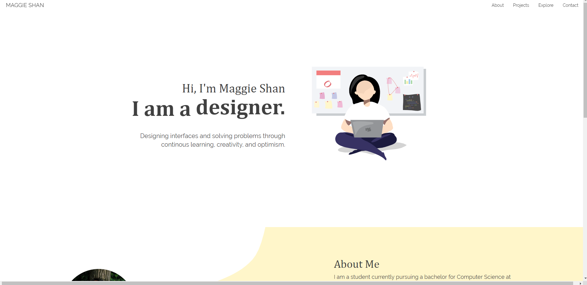

UX Challenges
My goal was to create a website to showcase my coding and design projects. As a site made from scratch, I focused on ensuring simple and accesssible navigation, mobile responsiveness, and most importantly design and branding personal to my style and character.
Skills
- HTML
- CSS
- Bootstrap
- Figma
- Adobe Illustrator
Process
I began this project in 2018 as my first introduction to web development, and while I struggled to learn the languages, the biggest challenges I faced was the actual design of the site. I went through several drafts and versions before building the current one, each time finding more flaws and room for improvement.
From the first site to the current, as I improved my proficiency and explored various JS libraries, I emphasized more on the importance of accessibility, responsiveness and cross-browser support.
